Introduction
This product is available via an open source license
Disclaimer: swtshell provides quite useful features but the GUI features could be greatly improved. The author would welcome a replacement. The new tool could use another language and GUI toolkit, for example a PyQT based tool. The only requirement is that the basic functionality is supported. As soon as a good replacement tool is available, swtshell will be abandoned.
swtshell is a remote shell for accessing a pvAcccess server. It can access records in a pvIOCJava but also any other server that implements a remote pvAccess server. Some example of what it can access are:
- V4 services
- Any service that is implemented via as a pvAccess server
- EPICS base records
- These can be accessed in two ways:
- pvAccess
- This is possible if the EPICS base IOC has pvaSrv running
- V3 Channel access
- This can be done by selecting caV3 as the channel provider
A caveat is that some of the features described in this document are only available if the server has support for the special features described in the last section of this document. Most special features are provided via a remote procedure call that is implemented via `channelRPC or channelPutGet. At the present time only pvIOCJava implements these features. It does this via special records. But even without the special features swtshell is a useful tool. It is a GUI tool that provides features similar to the command line tools pvget, pvput, and eget
This document has the following sections:
- Getting Started
- This explains how to start an example IOC and swtshell.
- Simple Example
- A simple example of using swtshell
- Basic Features
- The basic features of swtshell
- Special Features
- The special features that can be provided by a server.
Getting Started
In order to use swtshell and the example JavaIOC, the following projects must be installed and built:
- pvDataJava
- pvAccessJava
- pvIOCJava
- swtshellJava
swtshell is developed as an eclipse project with package name org.epics.swtshell. It can be started under eclipse or as a standalone Java application. This section describes how to start both an example JavaIoc and swtshell as standalone Java applications.
Since swtshell is a remote shell there must be one or more pvAccess servers running or there is nothing it can do. An example JavaIOC is provided with this project and is used for the examples for this document.
In the top level directory of this project there are two files:
- startExample.zip
- A zip file for starting the example Java IOC.
- swtshell.zip
- A zip file for starting swtshell
Copy these two files to your own area and unzip them. The files should work on any unix like system. For example linux and darwin. The next two sections explain how to use them.
startExample
Directory startExample has two files: source and startExample File source must be modified. It is:
# The following assumes that pvData, pvAccess, and javaIOC are eclipse projects in /home/hg
export IOCNAME=laptop
export WORKSPACE=/home/hg
export PVDATA=${WORKSPACE}/pvDataJava
export PVACCESS=${WORKSPACE}/pvAccessJava
export JAVAIOC=${WORKSPACE}/pvIOCJava
export CLASSPATH=${CLASSPATH}:${PVDATA}/bin
export CLASSPATH=${CLASSPATH}:${PVACCESS}/bin
export CLASSPATH=${CLASSPATH}:${JAVAIOC}/bin
export CLASSPATH=${CLASSPATH}:${JAVAIOC}jar/CAJ.jar
export CLASSPATH=${CLASSPATH}:${JAVAIOC}jar/JCA.jar
The definition of WORKSPACE must be changed. In addition you may want to change the definition of IOCNAME
File startExample should work as is. Note that additional -structures and -records definitions can be added as desired.
To start the example IOC just execute the command:
./startExample
swtshell
Directory swtshell has two files: source and swtshell File source must be modified. It is:
# The following assumes that pvData, pvAccess, and swtshell are eclipse projects in /home/hg
export WORKSPACE=/home/hg
export PVDATA=${WORKSPACE}/pvDataJava
export PVACCESS=${WORKSPACE}/pvAccessJava
export SWTSHELL=${WORKSPACE}/swtshellJava
export CLASSPATH=${CLASSPATH}:${PVDATA}/bin
export CLASSPATH=${CLASSPATH}:${PVACCESS}/bin
export CLASSPATH=${CLASSPATH}:${SWTSHELL}/bin
# The following MUST be changed to locate the release of swt on your system
export CLASSPATH=${CLASSPATH}:/usr/lib64/eclipse/swt.jar
The definitions of WORKSPACE and the last CLASSPATHmust be changed.
File swtshell should work as is.
To start the example IOC just execute the command:
./swtshell
Simple Example
Note: All examples assume that startExample is running
When swtshell is started the following Main Window appears:
`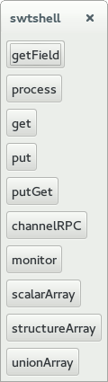
Click on the channelList button. The following appears:

NOTE: After text is typed into any text input window, the enter key must be pressed.
Enter laptop for the iocname and the click in the regularExpression window. The window now becomes.

Back in the main window click on monitor. The following appears:
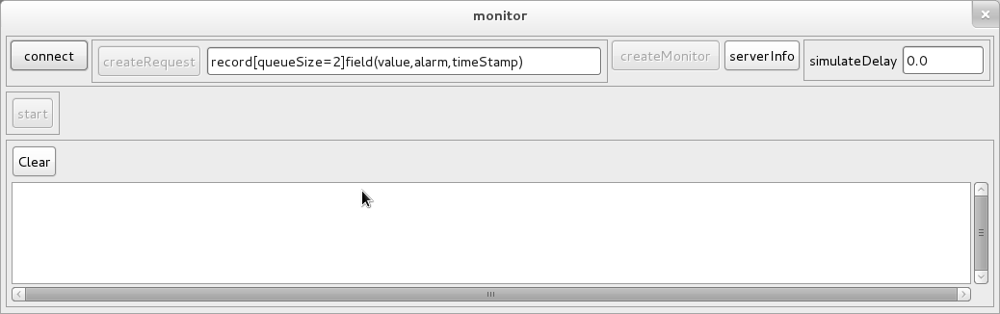
Click the connect button and the following window appears:
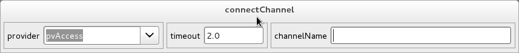
In the channelName box enter counterMonitor or just copy and paste this name from the channelList window. After the name is entered this window disappears and you are back to the monitor window.
In the monitor window click on createMonitor and then start and a short time later click stop The monitor window now looks something like:
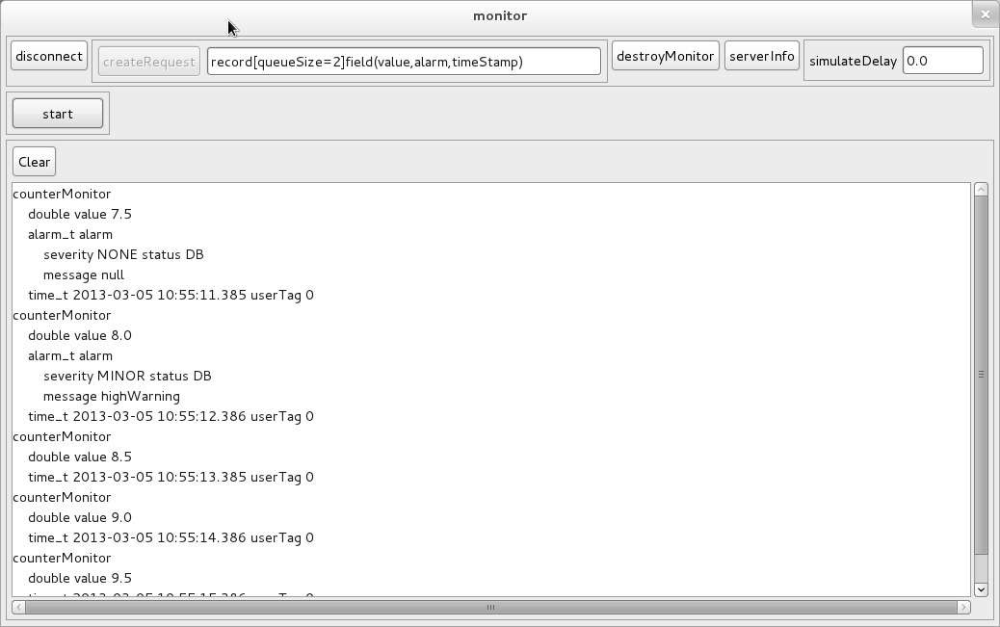
Congratulations!! You have just used swtshell.
Basic Features
Main Window
The following window appears when swtshell is started:
The window has the following buttons:
- channelList
- This obtains a set of the channels in a javaIOC.
- process
- channelProcess
- get
- channelGet
- put
- channelPut
- putGet
- channelPutGet. It provides access to many of the special features described in the last section.
- channelRPC
- channelRPC. It provides access to many of the special features described in the last section.
- monitor
- monitor support via Channel.createMonitor
- array
- channelArray, which provides access to a subset of a scalar array.
- structureArray
- structureArray, which provides access to a subset of a structure array.
When any button is clicked a new window appears. Each type of window is described in a separate subsection. Note that multiple windows of each type can be created at will.
channelList
NOTE: In order for this to work a channel provider must implement the channelList special feature described in the last section of this document. This means that it has a channel named <iocname>recordListPGRPC where <iocname> is the value of the environment varable <IOCNAME>. This channel must follow the semantics of this special feature.
This obtains a list of a subset, selected by a regular expression, of the records in a javaIOC. A name can be selected and dropped into a connect window descibed in the next sub-section.
When channelList is selected from the main swtshell window the following window appears.
The provider is normally pvAccess. The iocname must be specified. If the example Java IOC is started as shown above then just enter laptop. A regular expression ( A grep style expression) selects the set of records to list. Entering .*RPC selects all records with names ending in RPC. The default regular expression .* selects all records. When the enter key is pressed in the regularExpression, the list of channels is read via channel access and displayed. For example

Connecting to a Channel
The process,get, put, putGet, channelRPC, monitor, and array windows all have a connect button. When this button is pressed the following window appears:
The provider is normally pvAccess but caV3 can also be selected to connect to a V3 IOC record via the V3 channel access. You must enter the channelName of the desired channel. Note that the channel name can be obtained from the channelList described in the previous sub-section. When return is clicked a request is made to create a channel to the selected channelName and control is returned to the window that has the connect button.
Creating a Request
The get, put, putGet and monotor windows all have a createRequest button, which can activated after connecting to a channel. createRequest allows you to select an arbitarary set of fields from the PVRecord to which the channel is connected. All also show a text window with the curent request string displayed. This text window can be modified or the createRequest button can be clicked to use introspection to select a set of fields.
When the createRequest button is pressed the following window appears:
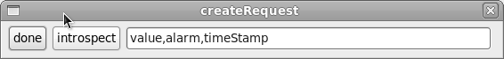
Again the text window can be edited. If options are provided for fields thety must be manually entered.
When the introspect button is clicked a window like the following appears. The details depend on the record structure.
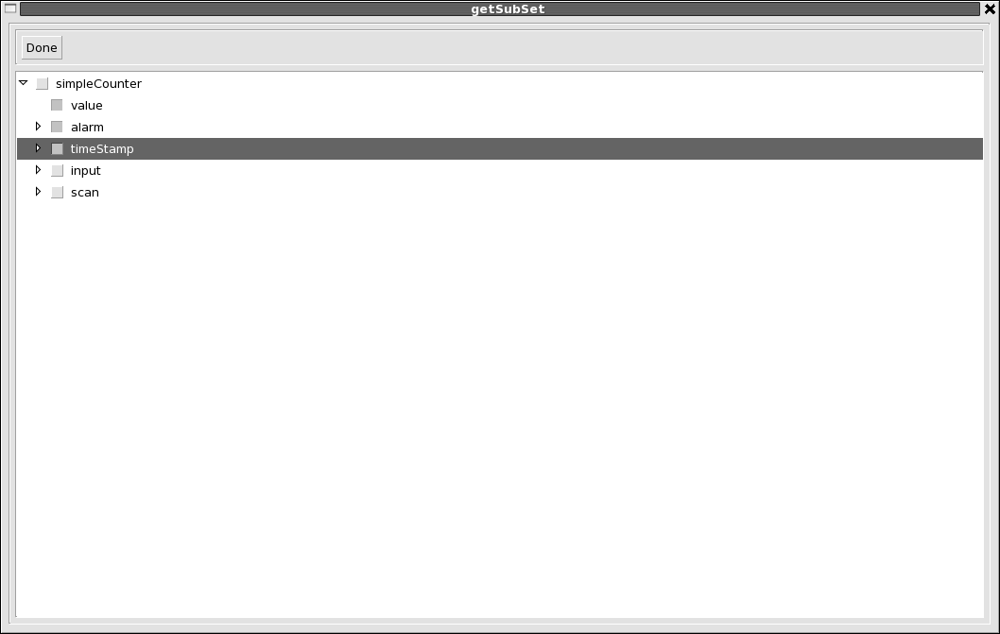
This window allows the user to select an arbitrary set of fields from the PVRecord to which the channel is attached. When the arrow for a structure field is clicked the fields for that structure appear. A field is selected by clicking the button next to the field name. If a structure field is selected the entire structure is selected.
A request can also be specified via a text window and then clicking the done button. The rules for specifying the request via a text string are explained in pvRequest.html
getField
The following window appears when the getField button is pushed:

This is for getting the introspection interface for fields from a PVRecord. The connect button is for connecting and disconnecting to/from a channel. The getField text is for specifying the subField of the top level structure that is desired. The getField button is for issuing a getField request to the channel.
process
The following window appears when the process button is pushed:
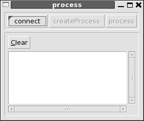
The connect button is for connecting and disconnecting to/from a channel. The createProcess button is for creating and destroying a channelProcess request. The process button sends a process request to the channel access server.
get
Clicking the get button of the swtshell window creates a window for issuing channelGet requests:
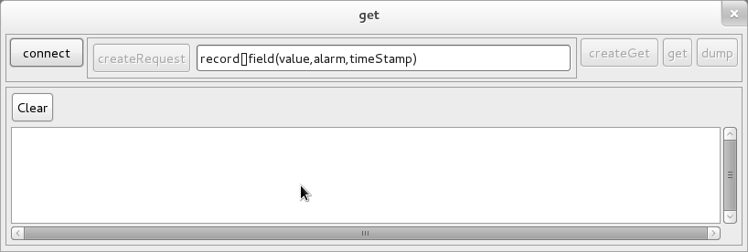
The following shows the window after connecting to a channel, clicking createGet, and clicking get:
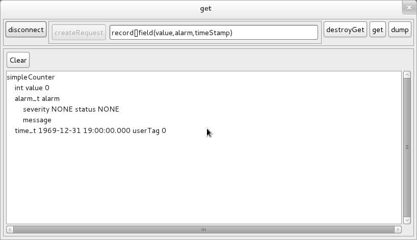
The first row has the following widgets:
- connect
- This was described above. Note that after connecting to a channel the button becomes disconnect.
- createRequest
- This was described above. Note that the text window can also be edited.
- crateGet
- Create and destroy a channelGet request.
- get
- Issue a get request. The result is shown in the text window.
- dump
- This shows the current data values.
put
The following window appears when the put button is pushed:
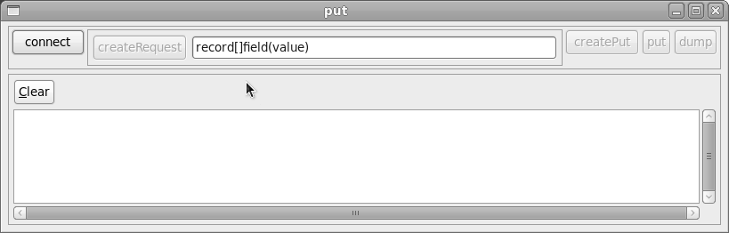
Except for put the top row is just like get.
When the put button is clicked then what happens depends of how many fields where selected from the PVRecord. If only a single scalar or array field was selected, then a text entry box apppears. When a value is entered and the return key is pressed then this value is sent via channel access.
If more than a single scalar or array field was selected then when put is clicked a window appears that allows the user to provide values to each scalar or array field of the selected fields. An example window is:
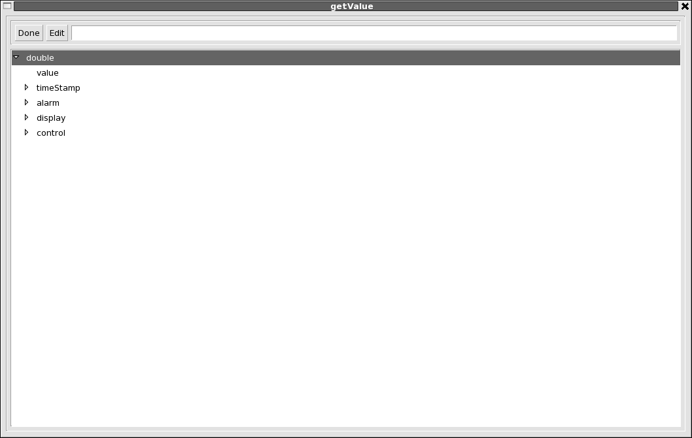
This display allows the user to give values to any of the scalar or array fields.
If a primitive or array of primitives is selected then when edit is clicked the following happens:
- The text entry window shows the current value.
- After text is entered and the enter key presssed the data is put in the PVStructure created as a result of createRequest.
When done is clicked the modified fields are sent to the channel access server and written to the PVRecord.
putGet
The following window appears when the putGet button is pushed. It is similar to get and put except that both a putRequest and a getRequest must be specified.
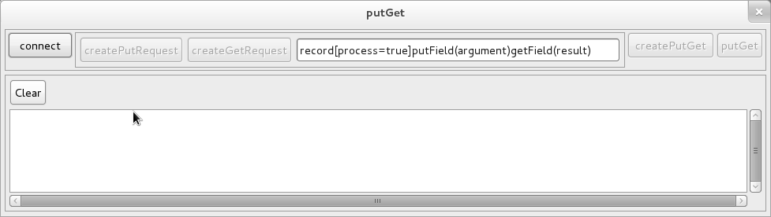
A typical use of putGet is to issue a remote procedure call. An RPC record, by convention, has the following:
- A top level feld named arguments.
- A top level field named result.
- Support that implements the RPC semantics.
A client creates a channelPutGet as follows:
- Connects to a channel
- Optionally creates a get and/or put request. If a record follows the field naming conventions for supporting channelPutGet then neither is necessary. If it is necessary either use the createPutRequest and createGetRequest buttons or directly enter into the text window.
- Click the createPutGet button.
A client issues an RPC request as follows:
- Gives values to the arguments. This is similar to how values were entered for put.
- issues a putGet
- Receives the result values.
The last section of this document shows many examples of using channelPutGet.
channelRPC
The following window appears when the channelRPC button is pushed. A channelRPC returns a new PVStructure for each request. The record must support a channelRPC request.
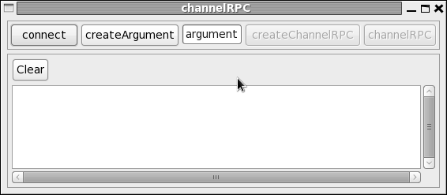
One of the features in the last section of this document is recordDump. This is an example of a channelRPC request.
The createArgument and argument controls are used to create the introspection interface for the data the client will pass to the server. The text window that shows the value "argument" is the field name of the top level structure for the argument. It can be changed to any valid field name, e. g. "NTTable". When the createArgument button is clicked the following window appears:
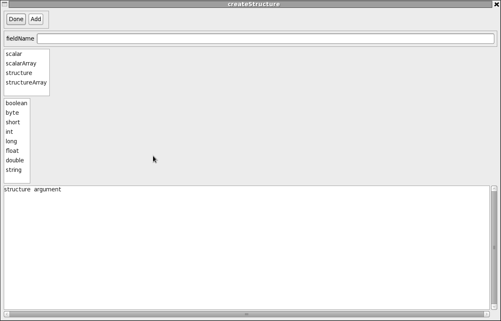
You enter a fieldName and select a type. If the type is scalar or scalarArray then you must also select a scalarType. When you click add the new field will appear in the console window. If you select type structure or structureArray then when you select add a new structureArray window will appear. You follow the same procedure to create a sub structure.When you click done the createStructure window disappears.
The default argument is a NTNameValue, which is the following type of structure:
structure
string[] name
string[] value
where
- name
- An array of names.
- value
- An array of values.
Assuming the default argument, when channelRPC is selected the following window appears:
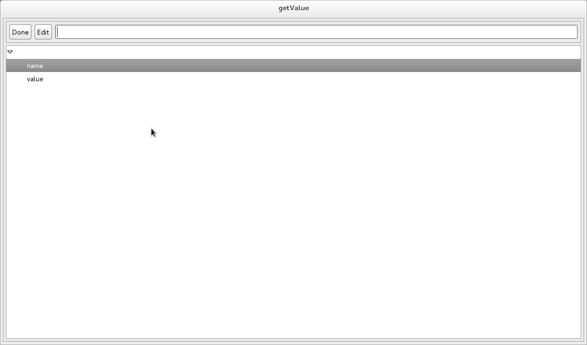
A value must be given to both name and value For example set name to name1,name2 and value to value1,value2 To set values for name do the followimng:
- Click name
- Click Edit
- In the text window after Edit enter name1,name2
When the argument has been completely specified click Done and the RPC request is issued.
monitor
The following window appears when the monitor button is pushed:
The controls in the first row are similar to get and put. Note that the queueSize can be set.
The other controls provide:
- serverInfo
- The status of the connection is shown
- simulateDelay
- This is for testing channel access. If a non-zero value is specified a delay occurs after each monitor is received.
When start is clicked monitoring is started. It changes to a stop button while monitoring is active.
array
The following window appears when the array button is pushed:
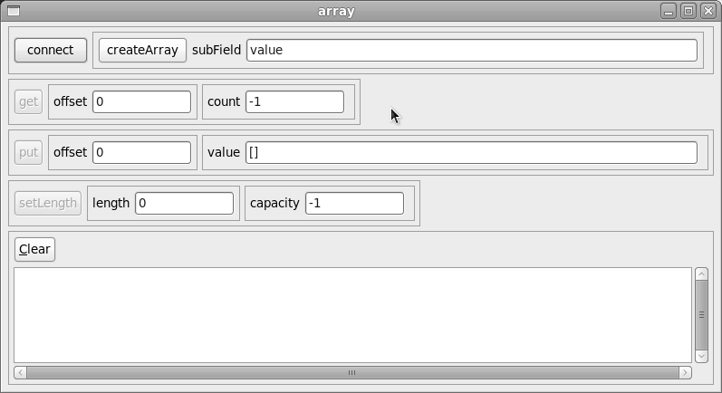
This window has a connect/disconnect button and a createArray/destroyArray button. It has a text entry for subField. The get button issues a array get request. The offset and count can be specified. The result is written into the value field of the put row. The put button issues a put array request. The offset can be specified. The value field provides the array values. The setLength button is used to set the length and/or capacity of the array. A value of -1 means leave as is.
structureArray
This is used to get and modify elements of a PVStructureArray. You must get before issuing a put. The puts will modify the data obtained via the get and then put the data back.
The following window appears when the structureArray button is pushed:
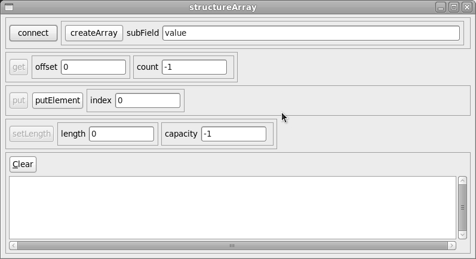
This window has a connect/disconnect button and a createArray/destroyArray button. It has a text entry for subField. The get button issues a array get request. The offset and count can be specified. The result is written to the consoleText window. You must issue a get before using put.
The put row acts on the data received from a put. You change elements by giving a value to index and clicking putElement. A tree structured window just like for put appears. This is changing the local data. When you click put the data is written to the actual record. The setLength button is used to set the length and/or capacity of the array. A value of -1 means leave as is.
Special Features
As mentioned above it is possible for a channel provider to add support for provider specific functions. This section describes special features that are provider by pvIOCJava. Some of these features or other features could be provided by other providers.
A provider can implement a feature via any channel method desired. The special features described in this section expect the client to use the following:
- monitor
- databaseMessages
- channelRPC
- recordDump
- channelPutGet
- All the other special features
databaseMessages
The Java IOC provides the ability to traps all message generated because of record processsing and makes them available to any pvAccess client via a special record. The client can just monitor the record. It also has support for a record that can generate messages.
<iocname>recordListener is the record that traps all messages. <iocname>generateMessage is the record that generates messages.
The following windows show an example:
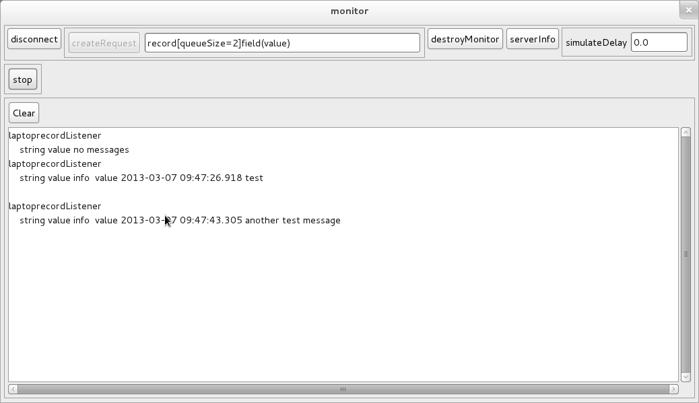
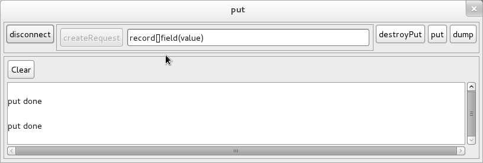
Note that the put window is connected to laptopgenerateMessage.
recordDump
This is record that is accessed via a channelRPC request. It returns the current values of a top level PVStructure, which can be either a record or a structure from one ot two databases: master or beingInstalled.
The record accepts a pvRequest argument that must be a NTNameValue The allowed set of names and associated value is:
- database
- Allowed value is either master or beingInstalled The default is master. You have to be a real expert to use beingInstalled.
- record
- Value is the name of a record in the selected database. Note that the name can be copied from channelList described above.
- structure
- Value is the name of a top level PVStructure in the database. Note that the structureList special record described below can be used to determine the list of the names of the top level PVStructures in the database.
By far the most useful argument is to specify only a single name.value pair with the name being record. An example is:
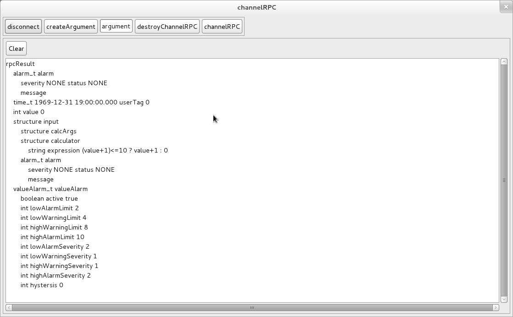
iocShow
This returns information about a Java IOC via a channelPutGet request. <iocname>iocShow is the record that implements the request. After connecting and creating the channelPutGet the window will appear as:
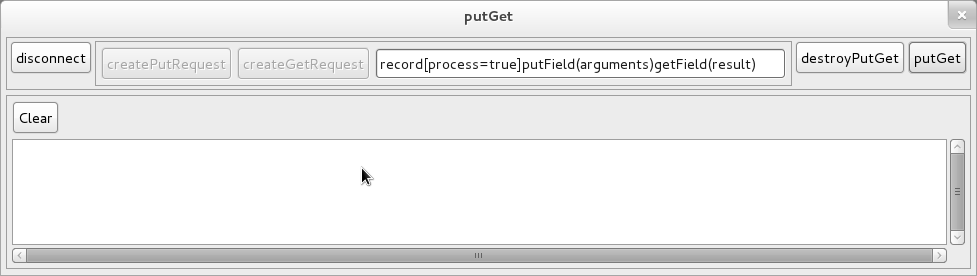
When you click on the putGet button a getValue window appears. The following shows the arguments and in particular the value of choices.
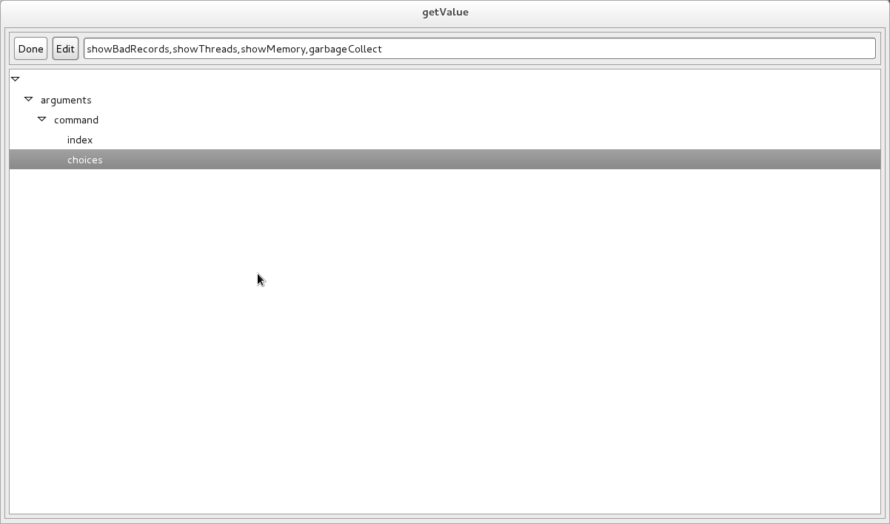
You must give a value to index.
To select a choice:
- Click on index
- Click on Edit
- In text box enter the index of the desired choice.
- Click on Done
The results will appear in the putGet window.
To show the threads created by the JavaIOC set index to 1. The following appears:
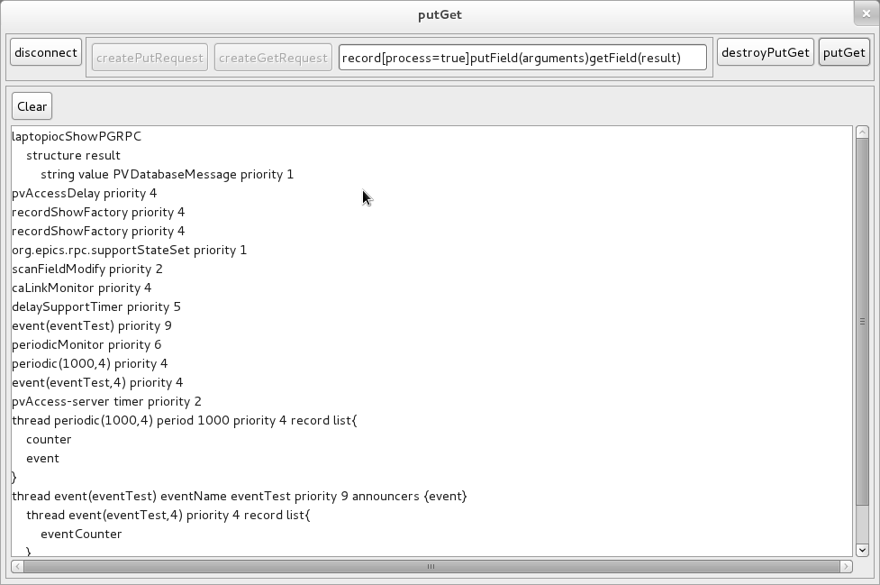
The complete set of choices is:
- showBadRecords
- Show the state of all records that are either not in support state readys or is currently in run state active
- showThreads
- Show all Java IOC threads
- showMemory
- Show memory used by Java IOC.
- garbageCollect
- Force a garbage collection
recordShow
This returns information about a record in a Java IOC via a channelPutGet request. <iocname>recordShow is the record that implements the request. After connecting and creating the channelPutGet and clicking of putGet A getValue window appears. Opening up the arguments at selecting choices getValue appears as:
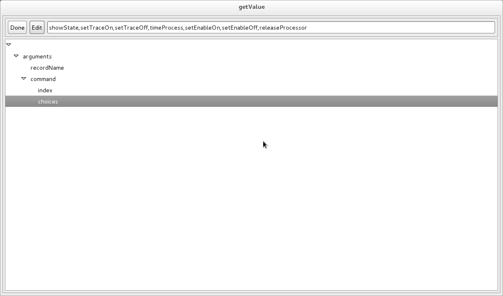
You must give a value to recordName and to index.
To specify the recordName
- Click on recordName
- Click on Edit
- In text box enter the name of the desired record. A value can be copied and pasted from channelList
To select a choice:
- Click on index
- Click on Edit
- In text box enter the index of the desired choice.
- Click on Done
The results will appear in the putGet window. For example if You set recordName to counterMonitor and index to 0 the following appears:
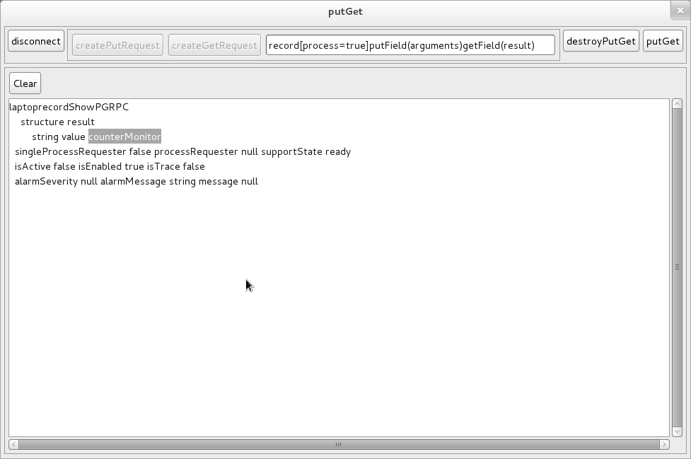
The complete set of choices is:
- showState
- Show the current state of the record.
- setTraceOn
- Start trace processing of the record. The output appears on the Java IOC console.
- setTraceOff
- Stop trace processing.
- timeProcess
- Time how long it takes to process a record.`
- setEnableOn
- Allow a record to process.
- setEnableOff
- Enable record processing.
- releaseProcessor
- Release the current record processor if a record is stuck.
structureList
This returns the names of structures in a Java IOC datebase. <iocname>structureList is the record that implements the request. After connecting and creating the channelPutGet and clicking om putGet A getValue window appears. Opening up the arguments and selecting regularExpression getValue appears as:
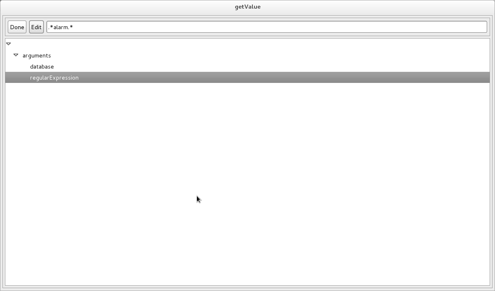
The database can be master or beingCreated. The default is master If regularExpression is given the value shown then when Done is clicked the following appears:
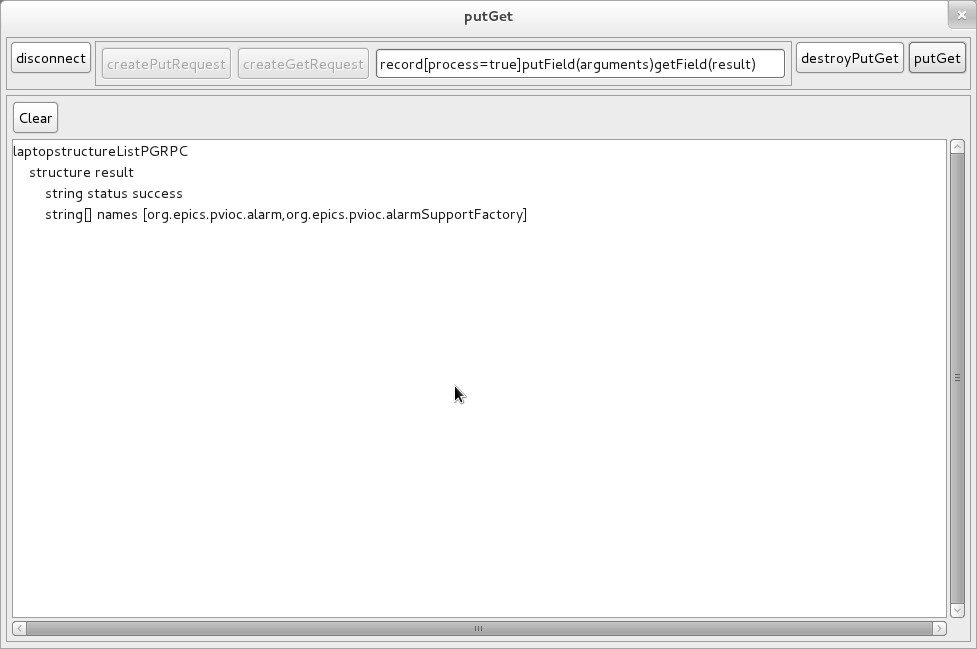
recordList
Returns the names of structures in the database. This is similar to structureList except that it returns the names of records instead of structures. This is what channelList calls so no example will be shown.
setSupportState
This is used to issue support state commands to a record. The commands are:
- initialize
- This is a request to put the record into state readyForStart.
- start
- This is a request to put the record into state ready.
- stop
- This is a request to put the record into state readyForStart.
- uninitialize
- This is a request to put the record into state readyForInitialize.
An attempt is made to put the record into the requested state no matter what the initial state is. Note that if the support attached to the record finds a problem the record may not reach the desired state. A record, after an IOC is initialized and started, is normally in the state ready, which means that it can be processed.
NOTE: changing the support state of a record is a serious operation, but it is necessary in order to do things like deleting a record. If the support state is changed while any clients like pvAccess are connected to the record they will be told to disconnect from the record.
Before the support state can be changed the record must first be disabled. This can be done via the recordShow discussed above. Once the record is disabled the state can be changed to any desired state. The most common request is uninitialize, which must be done before deleting a record. Another reason to change the state if a record is "stuck" for some reason. Issuing the commands uninitialize and then start may clear the problem. This can be useful when diagnosing problems on an active system.
The record <iocname>supportStateSet is the record that changes the state. The following shows an example of creating a channelPutGetwindow for issuing supportStateSet requests:
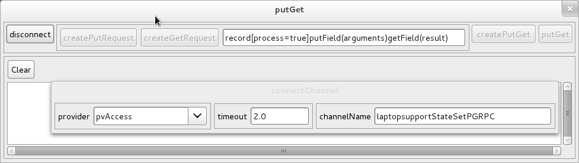
The following shows the arguments that the record provides. It also shows the set of choices that are provided.
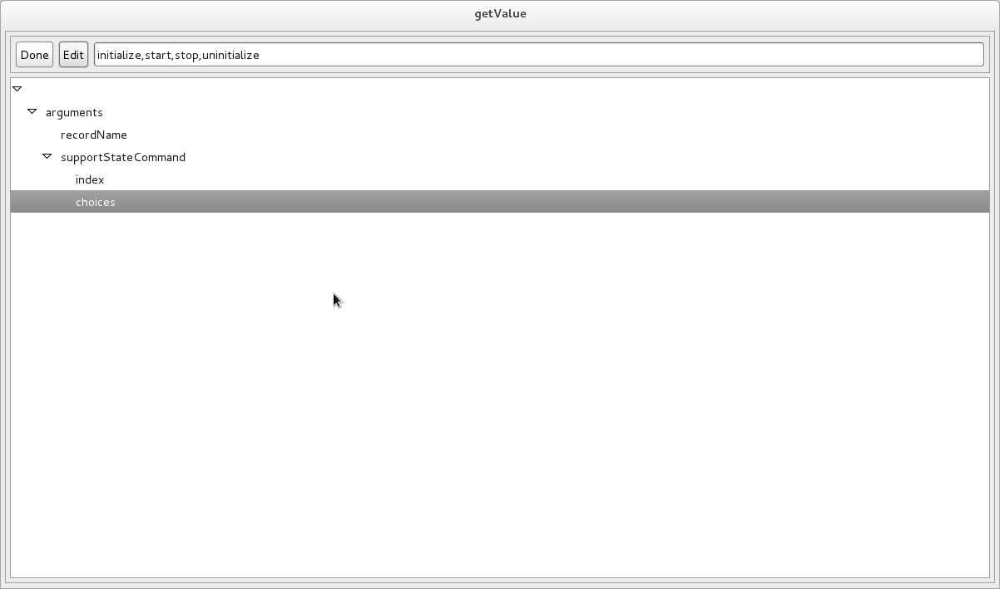
You must give values to recordName and to index. For example simpleCounter and 3 will put record simpleCounter into state readyForInitialize
recordRemove
This removes a record from the IOC database. <iocname>recordRemovePGRPC is the record that implements the request. Just create a channelPutGet request to this record. The argument consists of the single argument recordName. When a putGet request is issued the record is removed from the IOC database. Any connected client are automatically disconnected are the record is told to stop and uninitialize.
addRecords
This adds records to the IOC database. <iocname>addRecordsPGRPC is the record that implements the request. The client creates a channelPutGet request to this record. The argument consists of the single argument fileName. The file must have a valid set of xml statements as defined by pvIOCJava
The following shows how to connect to the record:
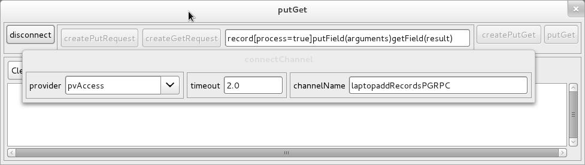
swtshell.zip includes two files: addRecords.xml addRecordsFail.xml. These can be used to demonatrate how to use addRecords. The first will result in successfully adding records and the second will fail.
The following two windows use the file that is valid. The first window is the request window:
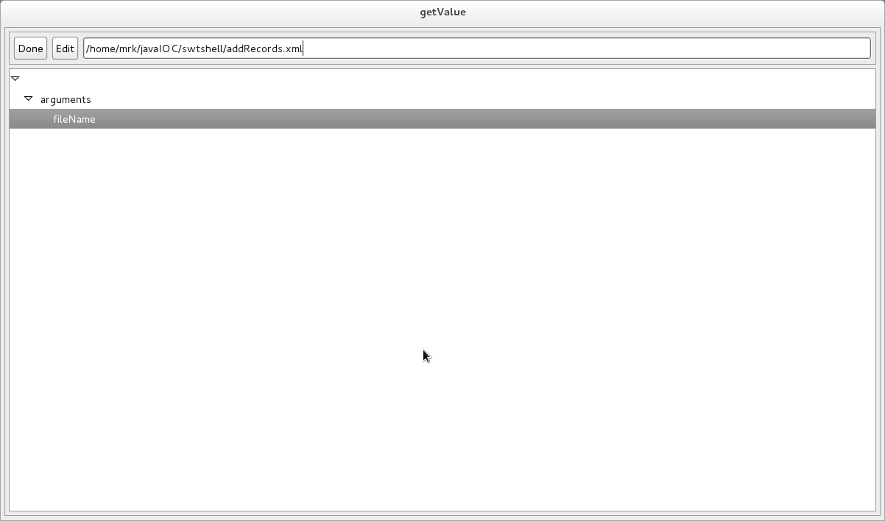
The channelPutGet window shows:
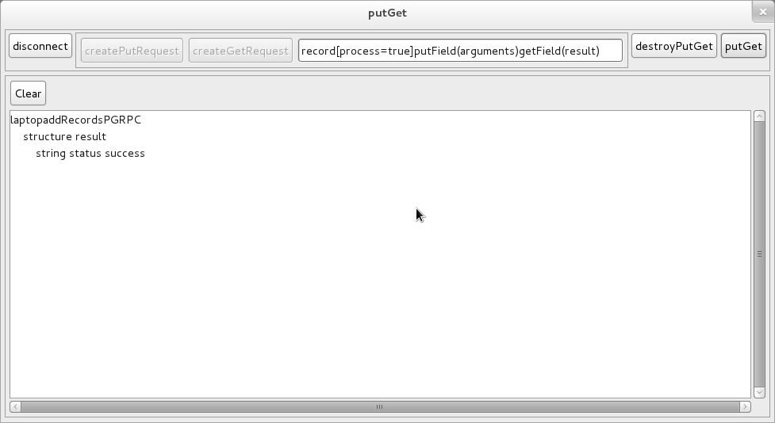
The following two windows use the file that is not valid. The first window is the request window:
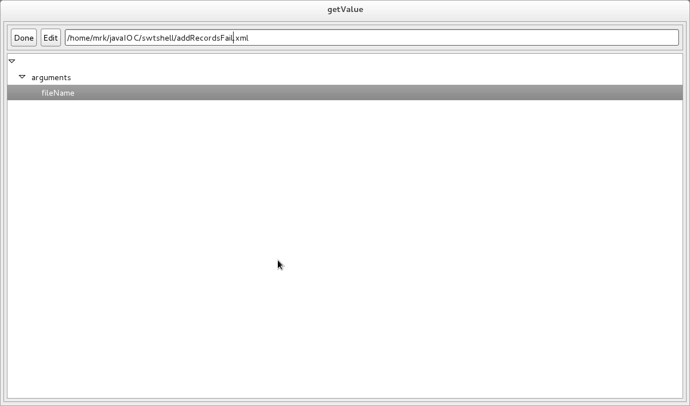
The channelPutGet window shows:
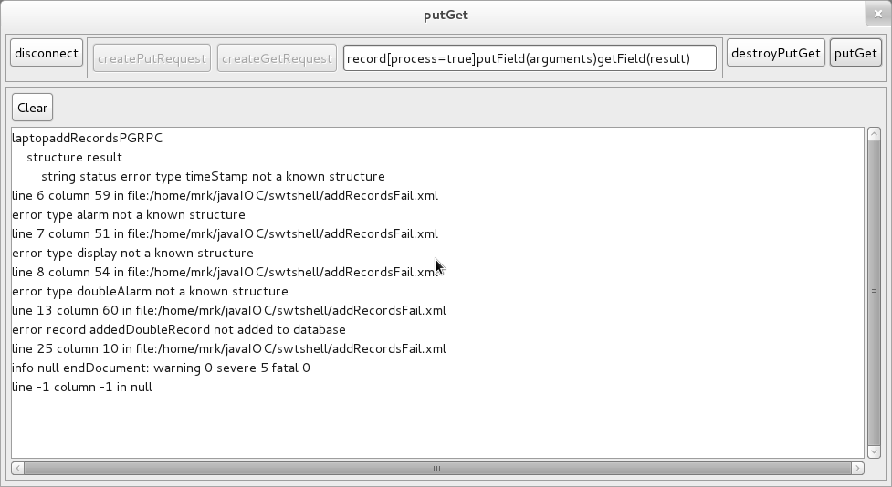